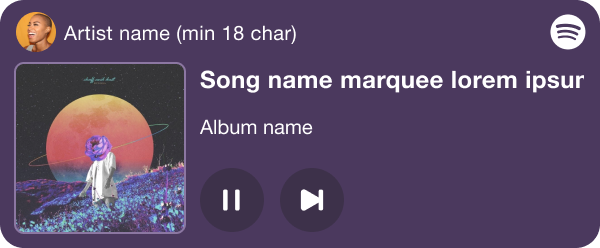
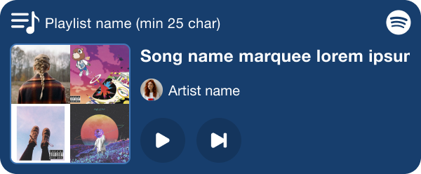
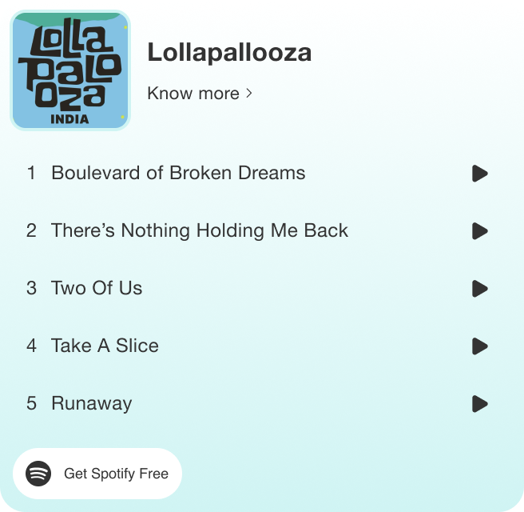

The pitch was straightforward: let users listen to an artist's songs directly on the event details page before buying a ticket. The execution required working within a strict constraint: Spotify's guidelines don't allow a seeker on embedded widgets, which rules out the most intuitive way to show playback progress. Working with PMs and engineers, I led the design end-to-end, finding solutions that respected Spotify's rules without making the widget feel broken or unfamiliar.
The result threads two brand languages into one cohesive component, with a sticky playback control that follows users as they scroll, ensuring previewing music and completing a booking don't have to compete for attention.
Third-party embedded audio players are strictly prohibited from showing user-scrubbable timeline seekers or progress indicators that imply scrub capability.
Engineered a custom-rendered circular loading ring around the play button. It indicates duration passage visually while signaling to users that scrubbing is non-interactive.
A new addition to the event details page was the option for users to listen to the snippets of the songs from the artist performing in the concert. As we decided to go ahead with Spotify integration, I designed a widget carefully managing to follow their brand guidelines while keeping the design close to BookMyShow visual style.


We mapped the active sound wave amplitude data into a pulsing status outline surrounding the player container, visualising activity without standard navigation markers.
When users scroll down to choose seat packages, the player collapses into a minimized brutalist sticky toolbar at the bottom margin. This allows users to pause the track instantly without scrolling back up.
Merging two distinct brand identities inside a single web component requires careful visual hierarchy. Spotify's design system relies on neon green (#1DB954) highlights and rounded elements, which stood in direct conflict with BookMyShow's zero-border, sharp-angled lookbook grid lines.
I resolved this by containerizing the Spotify player iframe inside our signature sharp-cornered brutalist boxes with heavy flat shadows. We restricted Spotify's brand color strictly to operational states (like the pulsing active music waves and play indicators), utilizing our muted typography scale for titles, ensuring the widget feels native to the BookMyShow event funnel.

The widget uses a scroll intersection script to monitor the position of the main player frame. When the viewport scrolls 120px past the player wrapper, the script clones active player parameters and renders a floating navigation strip at the bottom viewport boundary using hardware-accelerated transforms.
To avoid dual-audio playback, we implemented a custom state listener that stops the main container's audio thread immediately when a new audio clip is selected on the sticky controls, keeping system performance lightweight and responsive.
The result threads two brand languages into one cohesive component, with a sticky playback control that follows users as they scroll, ensuring previewing music and completing a booking don't have to compete for attention.
Event ticket conversion rates saw positive growth as users gained the ability to preview tracks without needing to navigate outside the transaction tunnel.